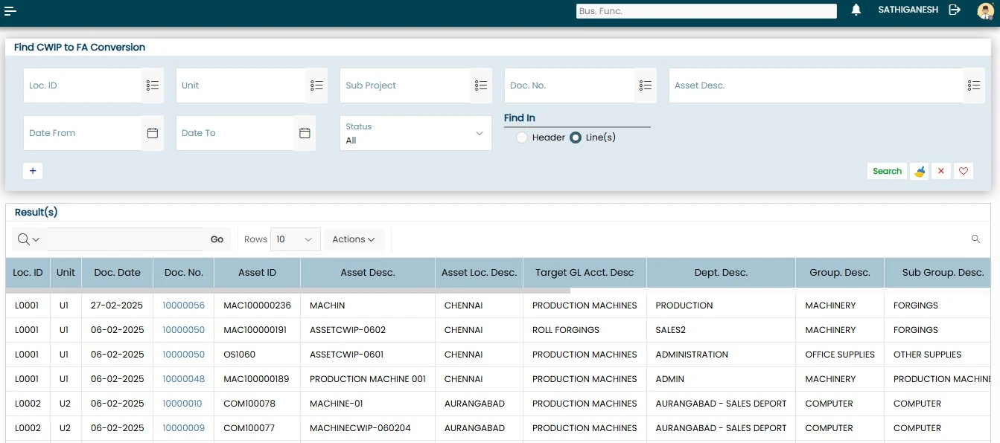
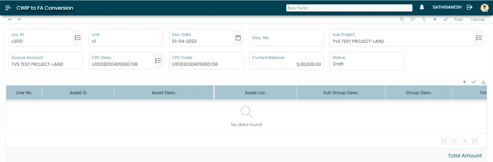
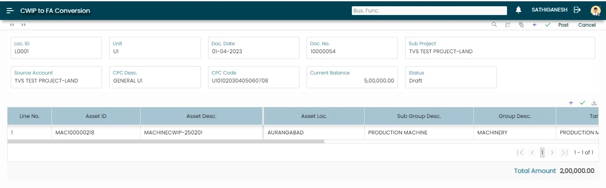

<div data-category="Financials" data-title="CWIP to FA Conversion" data-updated="December 01, 2025" data-contributors="RoadmapIT" data-breadcrumb="Home,Financials,CWIP to FA Conversion">
  <div class="page-content">
    <p>Capital Work in Progress (CWIP) refers to the costs incurred for constructing or acquiring fixed assets that are not yet ready for use. This includes the money spent on the construction or development of buildings, machinery, or other long-term assets before they become operational.</p>
    <p>This screen helps to convert CWIP to Fixed Asset.</p>
    <h5>Navigation path:</h5>
    <p class="fs-6">Financials \ Transactions \ Fixed Assets \ CWIP to FA Conversion</p>
    
    <ul style="list-style-type: none; align-content: center">
      <li class="mouse-icon">Search screen displays the list of CWIP with the relevant details and status.</li>
      <li class="mouse-icon">Click on search to filter all the records.</li>
    </ul>
    
    <ul style="list-style-type: none; align-content: center">
      <li class="mouse-icon">User can filter the respective documents by entering the search parameters at the header.</li>
      <li class="mouse-icon">Using search, system displays the results relevant to the search parameters entered.</li>
      <li class="mouse-icon">On-click; the corresponding transaction record will be displayed.</li>
      <li class="mouse-icon">Using  icon, entered search parameters can be cleared.</li>
      <li class="mouse-icon">To close the screen, use <i class="bi bi-x fs-4 mx-2 text-danger"></i> icon.</li>
      <li class="mouse-icon">Click on the document to view the details.</li>
      <li class="mouse-icon">Click on <i class="bi bi-plus fs-4 mx-2 text-primary"></i> to convert CWIP to FA</li>
    </ul>
    
    <ul style="list-style-type: none; align-content: center">
      <li class="mouse-icon">Select the Loc.ID</li>
      <li class="mouse-icon">Select the Sub Project.</li>
      <li class="mouse-icon">Click <i class="bi bi-check-lg fs-4 mx-2 text-success"></i> to Save the Header.</li>
    </ul>
    
    <ul style="list-style-type: none; align-content: center">
      <li class="mouse-icon">Click on in the Line details.</li>
      <li class="mouse-icon">Enter the Asset Desc.</li>
      <li class="mouse-icon">Select the Asset Loc.</li>
      <li class="mouse-icon">Select the Sub group Desc.</li>
      <li class="mouse-icon">Select the Group Desc.</li>
      <li class="mouse-icon">Select the Target Account.</li>
      <li class="mouse-icon">Select the Department.</li>
      <li class="mouse-icon">Select the CPC Desc.</li>
      <li class="mouse-icon">Enter the Amount.</li>
      <li class="mouse-icon">Click <i class="bi bi-check-lg fs-4 mx-2 text-success"></i> to Save.</li>
      <li class="mouse-icon">Click on post and the document can be forwarded for approval.</li>
    </ul>
  </div>
</div>